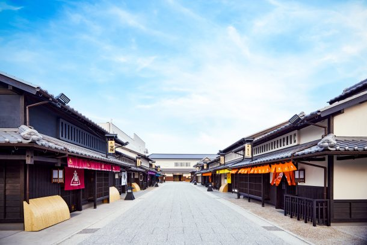

最新の情報は 公式サイトのツアーページ をご覧ください。
【24名様限定】往年の時代劇ファンの皆様へ！ 太秦映画村バックヤード見学と名ロケ地巡り
※大人・子ども同額
本ツアーの募集は終了いたしました
＜お問合せフォームはこちら▶＞
＜MKトラベルTOPはこちら▶＞
＜おすすめツアー一覧はこちら▶＞
かつてテレビや映画で親しまれた、数々の時代劇。
主人公の活躍に胸を躍らせたあの日々、印象に残るあの場面、あの景色――。
今回、太秦映画村の協力により、特別案内付きの映画村見学と、普段は見ることのできないバックヤードツアーが実現しました。
撮影の舞台裏や、時代劇を支えてきた映画村の魅力を専属スタッフの案内でお楽しみいただいた後は、MKタクシーで京都に残る名ロケ地へご案内。
大覚寺・大沢池、仁和寺、今宮神社など、数々の時代劇作品に登場した場所を巡りながら、懐かしい名場面を思い出すひとときをお過ごしいただけます。
画面の中で見ていた風景を、今度はご自身の目で。
歴史ある京都の町並みとともに、時代劇の世界へタイムスリップするような特別な一日をお楽しみください。
少人数でお届けする、時代劇ファンの皆様のための特別企画です。
| ここがおススメ！ |
| 🎬太秦映画村の特別バックヤードツアー 通常は見ることのできない映画村の裏側を、専属スタッフの案内で特別見学。時代劇の撮影を支える舞台裏に迫ります。 |
| 📺懐かしの時代劇の世界を体感 テレビや映画で親しまれた時代劇の世界へ。撮影セットやロケ地を巡りながら、懐かしい名場面を思い出していただけます。 |
| ⛩数々の名作を支えたロケ地を訪問 大覚寺・大沢池、仁和寺、今宮神社など、多くの時代劇作品の撮影に使用された京都の名所を巡ります。 |
| 🚙MKタクシーで快適に移動 歩く距離を抑えながら効率よく観光。移動中も乗務員による京都やロケ地の案内をお楽しみいただけます。 |
| ✨少人数限定24名様の特別企画 大型バスツアーでは味わえない、ゆったりとした雰囲気でお楽しみいただけます。 |
| 👘京都ならではの歴史と文化にふれる一日 ロケ地巡りだけでなく、寺社の歴史や見どころにも触れながら京都の魅力を再発見できます。 |
行程
| 10:00 | 京都駅八条口MKタクシーのりば （集合・出発） |
| 10:40 | 太秦映画村（到着） ＜特別案内 映画村 見学・バックヤードツアー／約140分滞在＞ ※昼食自由 |
| 13:00 | 太秦映画村（出発） |
| 13:30 | 大覚寺（大沢の池） ＜見学＞ |
| 14:40 | 仁和寺 ＜拝観★案内付き＞ |
| 15:40 | 今宮神社 |
| 17:00頃 | 京都駅（解散） |
※昼食は自由食のため、ツアー代に昼食代は含まれておりません。
※歩きやすい服装・靴でご参加ください。
※渋滞等で、行程の入替や、予定通りの滞在時間をお取りすることができない場合がございます。予めご了承ください。
太秦映画村

写真提供：太秦映画村
【MKトラベルLINE公式アカウント】
MKトラベルの新規ツアー情報をLINEでお届けいたします

【各SNSでも京都の情報やツアー情報をお届けしています】


旅行条件
| ツアー番号 | T701MK |
| 出発地 | 京都市 |
| 添乗員／ガイド | なし（乗務員がその業務を代行いたします）／なし |
| 食事 | なし（昼食：自由食） |
| 最少催行人数 | 12名様 |
お申込みについてのご注意
※最少催行人数は12名様です。最少催行人員に満たない場合は、旅行の実施を取りやめることがあります。出発の14日前にその旨をご連絡し、お客様から当社がお預かりしている旅行費用の全額をお返しいたします。
※旅行条件・旅行代金は、2026年5月1日現在を基準としています。
※行程および帰着時間は交通事情などにより変更になる場合があります。
※お申込みの前に弊社の募集型企画旅行規約をご確認ください。
よくある質問
Q.1名ですが、申し込みできますか？
A.はい。MKトラベルのツアーにはお一人参加の方もよく来られますので、お気軽にお申し込みください。
本ツアーの募集は終了いたしました
＜お問合せフォームはこちら▶＞
＜MKトラベルTOPはこちら▶＞
＜おすすめツアー一覧はこちら▶＞
・TACPOカード
・クレジットカード決済
・コンビニ決済
お支払方法詳細はこちら
お客様のご都合でご予約をキャンセルされる場合は、すみやかに下記お問合せ先までご連絡ください。
キャンセル料
11日目に当たる日以前
無料
10日目に当たる日以前
20%
7日目に当たる日以前
30%
旅行開始日の前日
40%
旅行開始日の当日
50%
旅行開始後又は無連絡
100%